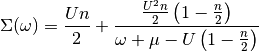

Hubbard I solver¶
Atomic limit expression of the self-energy is described by

This approximation is most accurate in the limit of strong coupling, as there the atomic case is closer. Nevertheless it is possible to see the formation of the Hubbard Bands and the redistribution of spectral weight.
# Created Mon Sep 28 15:25:30 2015
# Author: Óscar Nájera
from __future__ import division, absolute_import, print_function
import matplotlib.pyplot as plt
import numpy as np
plt.matplotlib.rcParams.update({'figure.figsize': (8, 8), 'axes.labelsize': 22,
'axes.titlesize': 22, 'figure.autolayout': True})
def hubbard_aprox(n, U, dmu, omega):
k = np.linspace(0, np.pi, 65)
mu = U/2 + dmu
sigma = n*U/2 + n/2*(1-n/2)*U**2/(omega + 0.05j + mu - (1 - n/2)*U)
eps_k = -2*np.cos(k)
lat_gf = 1/(np.subtract.outer(omega + 0.05j + mu - sigma, eps_k))
A_kw = -lat_gf.imag/np.pi
plt.figure()
plt.pcolormesh(k, omega, A_kw , cmap='hot_r')
plt.xticks([0, np.pi], [r'$\Gamma$', r'$X$'])
plt.xlim([0, np.pi])
plt.xlabel('k')
plt.ylabel(r'$\omega$')
plt.colorbar()
plt.title(r'Band dispersion for $\langle n\rangle$=' + str(n))
fig, ax = plt.subplots(2, 1, sharex=True,
gridspec_kw=dict(hspace=0, height_ratios=[1, 3]))
A_kw /= np.max(A_kw)
A_w = np.sum(A_kw, axis=1)
ax[0].plot(omega, A_w/max(A_w))
ax[0].set_ylabel(r'$A(\omega)$')
ax[0].set_yticklabels([])
ax[0].set_title(r'Spectral function for $\langle n\rangle$=' + str(n))
A_kw += k
ax[1].plot(omega, A_kw[:, ::2], 'k')
ax[1].set_xlim([min(omega), max(omega)])
ax[1].set_xlabel(r'$\omega$')
ax[1].set_yticks([0, np.pi])
ax[1].set_yticklabels([r'$\Gamma$', r'$X$'])
ax[1].set_ylabel(r'$A(k, \omega)$')
Starting with the half-filling case where the system is particle hole symmetric and there is a simple way to describe the Fermi energy. For this simple ilustration the 1D problem is worked on as the Self-energy is still momentum independent.
omega = np.linspace(-4, 4, 600)
hubbard_aprox(1, 3, 0, omega)
{kind=link}
{kind=link}
When doping the system it is possible to see the spectral weight redistribution. How the less occupied band is wider.
Warning
Chemical potential is not well set for the target occupation
hubbard_aprox(0.6, 3, -0.6, omega)
{kind=link}
{kind=link}
Total running time of the script: ( 0 minutes 0.737 seconds)